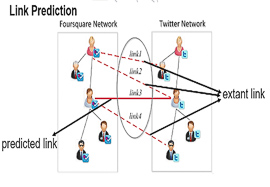
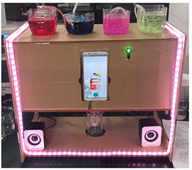

|
Magic MirrorA project that performed arbitrary style transfer in video flow, based on Kinect II. It supports gesture recognition, foreground extraction and age recognition. Human-Computer interaction is also provided: gesture of opening hands to open the project, scissor hands to change style, closing hands to close the project. Also, different style will be presented on users according to users’ age. |
|  |
Link PredictionA knowledge graph is a multi-relational graph composed of entities as nodes and relations as different types of edges. An instance of edge is a triplet of fact (head entity, relation, tail entity) (denoted as (h, r, t)). This task targets at inferring missing links in an observed academic knowledge graph using voter mechanism combining TransE and TransR. |
|  |
AlphaBarAn intelligent cocktail shaker system. It is controlled by a smart phone on the front panel with a newly-designed Android Application. AlphaBar supports three order modes: order by menu, DIY, and speech recommendation. While the cocktail is being made, proper light and music are provided, together with heart rate abnormity detection offering a protection. |